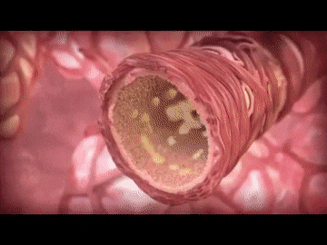
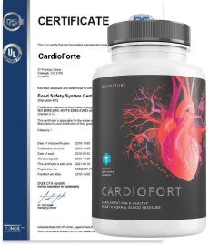

«Чистые сосуды – это залог долгой и счастливой жизни» - уверяет Мигель Рабелино, известный кардиолог и долгожитель
Кардиолог Мигель Рабелино отметил свой 95й юбилей. Всю свою жизнь он посвятил изучению сосудов и сердечно-сосудистых заболеваний, помог сотням пациентов и смог дожить до такого почтенного возраста благодаря своим методикам.
Мы связались с др. Ребельтино по Zoom
В эпоху пандемии безопаснее оставить на интернет связи
Редакция: Доктор Рабелино, вы заявляете, что весь секрет долголетия в сосудах, но почему так?
Доктор Рабелино: Сосуды – это основа всего. Они питают органы кровью, и от правильного и качественного кровоснабжения органов будет зависеть и наше здоровье и долголетие. Если органы не снабжаются кровью, они не могут быть здоровыми. Поэтому прежде всего мы заботимся о здоровье сердечно-сосудистой системы.
Подобно трубам наши сосуды склонны засоряться. Их может засорять как холестерин, так и различные соли, которые мы употребляем с пищей. Если не заниматься очисткой сосудов, то годам к 40 начнутся большие проблемы со здоровьем, так как просвет сосудов будет изрядно сужен.
Редакция: Возможно ли как-то избежать засорения сосудов? Если да, то как?
Доктор Рабелино: В определенном роде да. Поскольку одним из факторов засорения сосудов являются соли, можно снизить потребление соли с пищей. Ограничить еду, богатую так называемым вредным холестерин, это майонез, свинина, сыр, газировка. Хотя, частично холестерин вырабатывается нашей печенью, и содержится во всех продуктов, потому полностью избежать его мы не сможем.
Холестириновые бляшки, которые появляются после 40 лет
Доктор Рабелино: Умеренная физическая нагрузка тоже очень важна для поддержания здоровья сосудов. Хотя, тут очень важно не переборщить. Ведь тяжелые нагрузки чреваты теми же инфарктами и другими сердечными патологиями. Ну и, конечно, своевременная очистка сосудов . Да, наши сосуды – не трубы, но их тоже можно очищать, в том числе воздействуя через печень, которая отвечает за выброс всех нечистот нашего организма. По сути, грязные сосуды – это результат общей загрязненности организма.
Редакция: Чем же опасны грязные сосуды?
Доктор Рабелино: Загрязненные сосуды опасны такими заболеваниями, как
- Варикозное расширение вен – это деформация вен ног и внутренних органов
- Тромбофлебит – это воспаление стенок поверхностных вен. Опасно, как и любой воспалительный процесс
- Тромбоз – когда вена полностью или частично перекрыта. Очень опасное для жизни состояние
- Атеросклероз – поражение мелких артерий
- Венозная недостаточность – нарушение оттока крови
- Аневризмы – расширение сосудов головного мозга
Паралич в результате инсульта. Требует долгой и дорогой реабилитации.
Варикозное расширение вен – огромный косметический дефект и реальная угроза жизни.
Редакция: Кому нужно чистить сосуды?
Доктор Рабелино: Ранние тревожные признаки проблем с сосудами это
- Головокружения, особенно при изменении положения тела (когда встаете или садитесь)
- Озноб даже при нормальных температурах;
- Неравномерный пульс
- Метеозависимость
- Отечность или онемение конечностей;
- Сосудистые звездочки;
- Снижение работоспособности;
- Заметная одышка;
В общем то, после 40 лет почти у всех с той или иной скоростью начинают возникать эти симптомы
Редакция: Какие методы очистки сосудов вы предлагаете и используете?
Доктор Рабелино: Раньше очистка сосудов была для меня долгим процессом, и я проводил ее поэтапно. Эта процедура включала в себя очистку кишечника, печени, почек, лимфы. Как я уже говорил, печень – это краеугольный камень, ведь именно она отвечает за выработку холестерина. Я подбирал натуральные компоненты для каждого этапа очистки. Можно сказать, что очистка сосудов – это мудрость, накопленная веками изучения природы и тела человека.
Но сейчас все изменилось, и очистка суставов стала намного легче. На рынке появился комплексный препарат, обладающий уникальными свойствами. Он одновременно очищает и печень, и почки, и кишечник, и лимфу. Препарат полностью натуральный, что особенно важно. Он действует мягко о очень эффективно, постепенно очищая организм в целом и сосуды в частности.
Курс приема длится около 1 месяца, и за это время организм полностью восстанавливается, кровеносные сосуды буквально очищаются и тревожные признаки исчезают. Этот препарат называется Кардиофорт. Мои пациенты отмечают, что после приема Кардиофорт их состояние в целом улучшается.
Недавно были проведены все необходимые испытания. Контрольная группа составляла около 2000 человек. Испытания препарата показали следующий результат:
- Нормализовалось кровяное давление – 97% пациентов
- Улучшилось самочувствие – 99,5% пациентов
- Очистились сосуды – 98% пациентов
- Нормализовался пульс – 100% пациентов
- Отсутствие побочных эффектов – 100% пациентов
Мы считаем, что это очень высокая эффективность и потрясающий результат для природного препарат а без побочных эффектов.
Редакция: Где он продается?
Доктор Рабелино: Препарат продается на официальном сайте производителя. Сейчас очень удачный момент для покупки, потому что на сайте действует скидка 50%. Хотя препарат и так весьма доступен по цене. Подробнее о том, как получить Кардиофорт с доставкой по всей стране.
Чтобы заказать Кардиофорт, вам необходимо:
- Заполните форму на официальном сайте .
- Менеджер свяжется с вами для подтверждения адреса доставки.
- Через 4-7 дней Вы получите Кардиофорт на почте.
Редакция: Господин Рабелино, спасибо вам за ответы и за ваш секрет долгой жизни.
ОБНОВЛЕНИЕ ..:Важно! Из-за большого количества запросов мы вынуждены ограничить продолжительность этой кампании. Текущий этап продлится до ..: включительно. До конца акции все желающие могут заказать оригинальный продукт Кардиофорт через официальный сайт со скидкой 50%.
Старая цена:
100$
Новая цена:
50$
КОММЕНТАРИИ
Вера
3h
Я всю жизнь стараюсь заботиться о сосудах, ем полезную еду и занимаюсь спортом. Но вот мне 68, и доктор сказал, что сосуды все равно забиты, хоть и значительно меньше, чем у моих ровесников. Назначил прием Кардиофорт..
Виктор
2d
Мне Кардифоррт помог не только давление нормализовать, но и некоторые интимные проблемы решить.
TAGS RELACIONADOS:
Медицина
Медицинский университет Колумбии
Кардиофорт
Сосуды